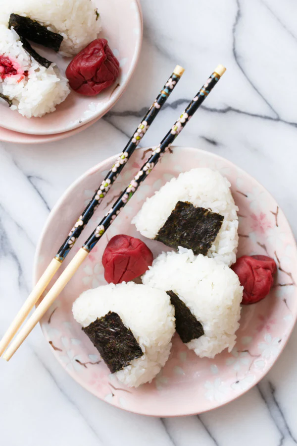

Umeboshi Onigiri

Description
Umeboshi onigiri is a traditional Japanese rice ball or rice triangle typically filled with a pickled plum (ume) at its center. The pickled plum provides a tangy, sour, and salty contrast to the seasoned sushi rice, creating a unique and flavorful combination. Ume onigiri is a popular snack or lunch option in Japan and is often wrapped in a sheet of nori seaweed for added texture and flavor.
Ingredients
- Sushi Rice: Seasoned with rice vinegar, sugar, and salt.
- Pickled Ume Plum: A sour and salty pickled plum, which is usually pitted.
- Nori Seaweed (optional): Sheets of dried nori seaweed for wrapping the onigiri, although this is optional.
You can also find variations of umeboshi onigiri that may include additional ingredients like sesame seeds or seasoning to enhance the flavor, but the core ingredients are rice and pickled ume plum.
Recipe
- Prepare the sushi rice:
- Rinse the rice in cold water until the water runs clear.
- Cook the rice according to the package instructions.
- While the rice is still hot, mix in the rice vinegar, sugar, and salt. Let it cool to room temperature.
- Prepare the umeboshi plums:
- If the umeboshi have pits, carefully remove the pits.
- You can use the whole plum or cut it into smaller pieces, depending on your preference.
- Assemble the onigiri:
- Wet your hands slightly to prevent the rice from sticking.
- Take a handful of seasoned sushi rice and shape it into a small triangle or ball in the palm of your hand.
- Place a pickled ume plum in the center of the rice.
- Mold the rice around the plum, shaping it into a triangle or ball. Ensure that the plum is well-enclosed within the rice.
- If using nori seaweed:
- If you'd like to add nori to your onigiri, you can wrap a strip of nori around the onigiri. This step is optional but adds a nice texture and flavor contrast.
- Repeat the process for the remaining onigiri.
- Serve:
- Umeboshi onigiri can be enjoyed immediately, or you can wrap them in plastic wrap for a portable snack or lunch option.
Umeboshi onigiri is known for its tangy and salty flavor due to the pickled ume plum, and it's a delicious and traditional Japanese treat that's enjoyed by many.